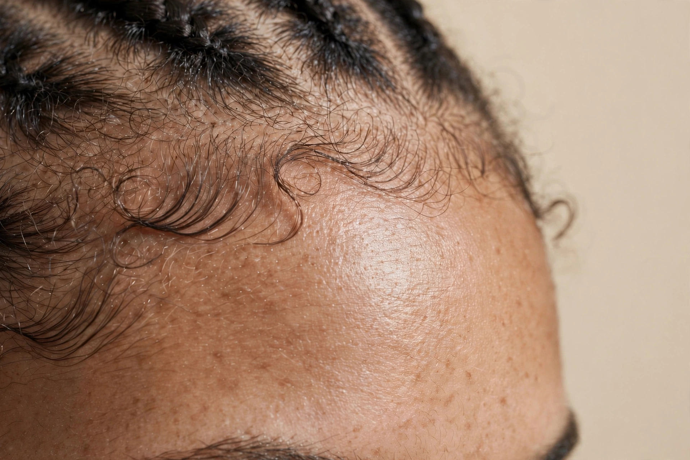
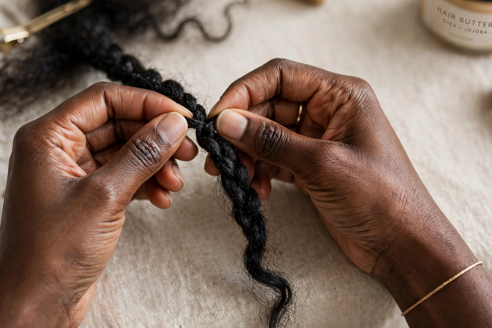
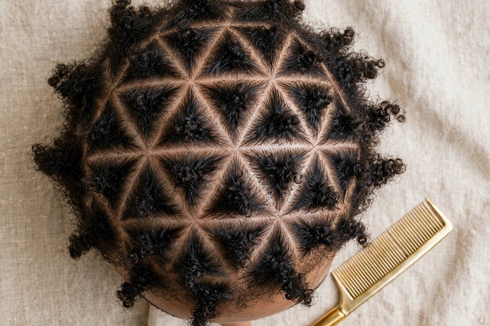
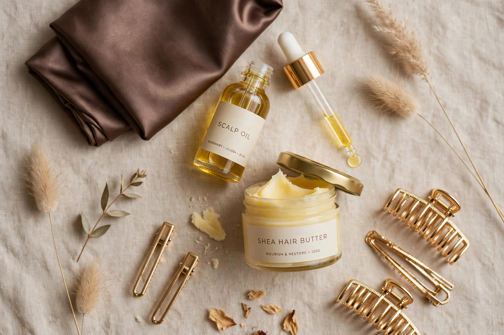

If your braids have ever left you with tender temples, little red bumps along your hairline, or that too-tight headache, you weren't imagining it. Tension is predictable — it hides in three specific places.
In this guide, I'm breaking down the exact map I've used for over 3,000 installs at the Atelier. No myths. Just anatomy, parting math, and the 48-hour check that saves edges.
1. The Tension Map: Where Damage Really Starts
Most stylists pull hardest where your hair is finest: the front hairline, the nape, and right behind the ears. Those three zones have fewer follicles per cm² and thinner strands. When we braid too small or too tight there, we create traction alopecia over time.

If you feel your braids the second you stand up, they are too tight. Healthy braids feel like nothing after 10 minutes. Tenderness is not normal.
2. The Tension-Free Anchor Technique
Traditional box braids start with a knot at the root. Knotless starts with your own hair, then feeds in extension hair 1–2cm down. That shift removes 70% of the pulling force on the follicle.

My rule: I never grip with fingertips, I guide with palms. If my knuckles whiten, I'm pulling. Our atelier technique uses three gentle passes, not one tight one.
3. Parting Width = Edge Insurance
Small parts look neat on Instagram, but micro-parts = micro-tension. For the perimeter (first 2 rows around your entire head), I use 1.2x your natural density width.

Triangular bases > square bases for edges. They move with your scalp and distribute weight. I also leave a 2mm cushion of loose hair around each braid base — that cushion is your buffer.
- Front 1 inch: Medium-large triangles, 1cm+ apart
- Temples: Always curve partings away from the face, never straight back
- Nape: Larger parts, never braid on wet, freshly gelled hair
4. The 48-Hour Rule That Saves Edges
Day 0-2 is when traction damage is reversible. If you have bumps, itching that burns, or can't move your forehead, we loosen that same day.

My post-install protocol:
- Night 1: No bonnet. Let scalp breathe. Light mist of aloe + water.
- Morning 1: Rosemary-jojoba oil only on part lines, not on braids.
- Day 2: If tension, I remove the perimeter braids and redo them free. No charge. Edges over ego.
- Night 2 onward: Silk bonnet, low pineapple, never a tight scarf over fresh braids.
What to ask your braider
Save this for your next appointment: “Can we do knotless, triangular parts on the edges, and keep the first row larger? And if it's tight, can I come back in 48 hours?” A pro will say yes before you finish the sentence.
Harare, Zimbabwe • Virtual Consults Worldwide • Mon—Sat, 9AM—5PM CAT